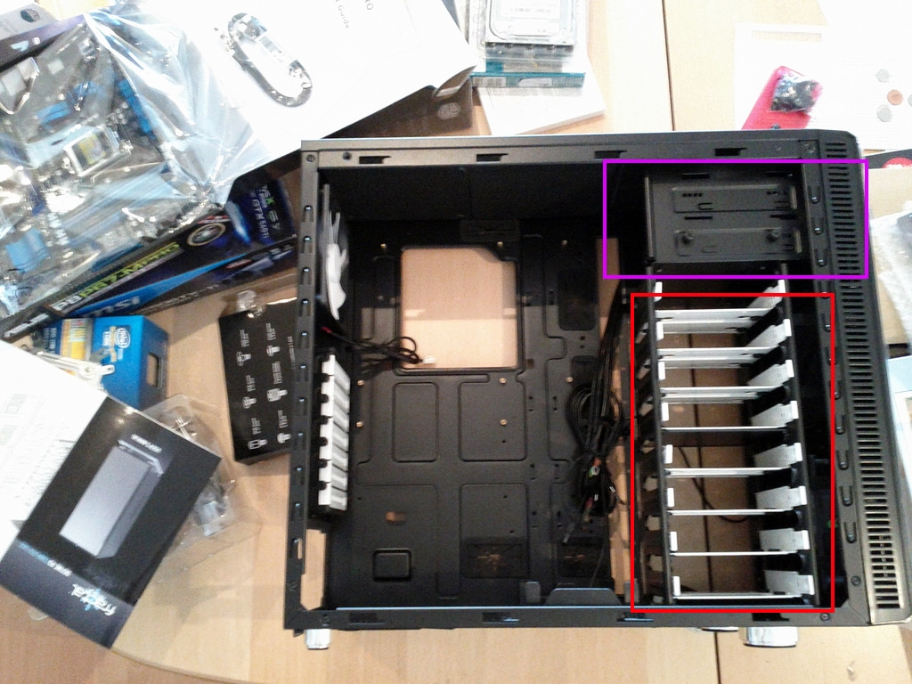

Installing the Drives (Hard Drive and Disk Drives)!
The different drives you will need to install will vary between users, but all PC's will need a hard drive at the minimum.
You may or may not need a screwdriver for this process. It depends on the method of mounting used by your case. Check your manuals and the case itself to find out!
This guide has some optional steps, which will be noted. This will depend on if you need a CD or DVD drive in your PC. If you do, the optional steps are not optional for you!
Click any images on this page to open them in a separate tab/window for better viewing.
Steps:
- Find the spot where your case stores hard drives. This is highlighted in my example image in red.
- Depending on your case, you may not need to screw anything down. If this is true for your case, simply slide your hard drive into the cage and latch it with the method used by your case.
- If you case requires you to screw the hard drive into the cage, do so using a screwdriver and any supplied screws.
- OPTIONAL - Refer to your case manual for removal of any optical drive shields your case may have in the front of the case. Carefully follow the specific instructions and remove the shield.
- OPTIONAL - Take your optical drive and place it in the cage (highlighted in purple in my example image). This also may or may not require screws. Follow the case manual!
- Once all of your drives are locked down securely, you can move on to the final building step!